Buku ini adalah panduan praktis untuk GARDA CYBER, sebuah platform operasi keamanan berbasis web yang menyatukan inventaris aset, pemantauan serangan permukaan, intelijen alamat IP, pengelolaan temuan kerentanan, penanganan insiden, dan eksekusi alat keamanan dalam satu tempat.
GARDA CYBER dibangun sebagai aplikasi web modern: bagian belakang ditulis dengan Python (FastAPI) dan SQLite, bagian depan dengan React, dan alat-alat keamanan dijalankan melalui integrasi yang terdaftar di satu registri pusat. Buku ini menemani Anda mulai dari instalasi pertama kali sampai pengoperasian harian, lengkap dengan hasil pengujian yang benar-benar dijalankan dan daftar batas sistem yang belum tersedia.
Sikap jujur adalah prinsip pertama dokumen ini. Bila suatu fitur masih terkunci, buku ini menampilkan kalimat terkuncinya apa adanya. Bila suatu jawaban berasal dari penyedia contoh (bukan data nyata), buku ini menuliskan labelnya apa adanya. Bila suatu janji belum ditepati, buku ini menuliskannya di bab batas. Anda tidak perlu menebak-nebak.
Buku ini disusun untuk versi perangkat lunak v0.5.1. Bila Anda memakai versi lain, periksa dulu nomor versi pada lencana di bilah samping aplikasi, lalu sesuaikan nomor halaman dan tangkapan layar pada buku ini.
Penyusun,
November 2026
Mengelola keamanan suatu lingkungan teknologi berarti bekerja dengan banyak alat sekaligus: pemindai port, pemindai kerentanan, enumerasi domain, pemeriksa reputasi alamat IP, dan pencatat kejadian. Masing-masing alat biasanya berjalan sendiri, menyimpan hasilnya sendiri, dan tidak saling berbicara. GARDA CYBER dibangun untuk mempertemukan pekerjaan itu dalam satu ruangan: satu dasbor untuk melihat keadaan, satu tempat untuk mengelola aset dan temuan, dan satu registri untuk menjalankan alat keamanan.
Perangkat lunak ini disusun sebagai aplikasi web modern. Bagian belakang (backend) ditulis dalam Python dengan kerangka FastAPI dan menyimpan data pada berkas SQLite. Bagian depan (frontend) ditulis dalam React. Alat-alat keamanan tidak dilebur ke dalam kode, melainkan didaftarkan dalam satu registri pusat sehingga status setiap alat — jalan nyata, pajangan, atau terkunci — dapat dilihat jujur dari satu halaman.
Buku ini disusun menyusul permintaan agar tersedia manual book yang mengikuti format buku ajar, lengkap dengan bukti nyata: tangkapan layar dari instalasi yang benar-benar berjalan, angka pengujian yang benar-benar dijalankan, dan kalimat terkunci yang ditulis apa adanya.
Buku ini membahas:
Jalankan dari terminal di folder utama repositori:
bash setup.sh
Skrip ini melakukan empat langkah seperti pada Tabel 1. Anda tidak perlu mengetik perintah satu per satu; skrip berhenti sendiri bila salah satu langkah gagal, dengan pesan yang menyebutkan langkah mana yang bermasalah.
| Langkah | Yang dilakukan | Keterangan |
|---|---|---|
| [1/4] | Persiapan virtual environment backend | Dibuat di backend/.venv bila belum ada. |
| [2/4] | Instal dependensi backend | Membaca backend/requirements.txt; pip ditingkatkan lebih dulu. |
| [3/4] | Instal dependensi frontend | npm install di folder frontend/; bisa beberapa menit. |
| [4/4] | Jalankan server, tunggu kesehatan, isi data demo, buka peramban | Lihat Bab 2.4 dan 2.5 untuk rincian. |
Dua berkas contoh disalin otomatis bila belum ada: backend/.env dari backend/.env.example dan frontend/.env.local dari frontend/.env.example. Berkas yang sudah ada tidak ditimpa, sehingga settingan Anda tidak hilang saat menjalankan skrip lagi.
Pasangan skrip untuk Windows adalah setup.bat. Alurnya sama: siapkan lingkungan, instal dependensi, jalankan server, tunggu kesehatan, isi data demo, lalu buka peramban. Jalankan dari Command Prompt atau PowerShell di folder utama repositori dengan mengklik dua kali berkasnya atau mengetikkan namanya di terminal.
Setelah pemeriksaan kesehatan berhasil, skrip mengisi data demo secara otomatis melalui titik akhir HTTP yang sama dengan yang dipakai manusia, dengan dua pengaman:
Bila pengisian gagal, skrip hanya menampilkan peringatan [WARN] dan tetap melanjutkan — server sudah jalan, hanya dasbor yang mungkin kosong. Anda dapat mengisi ulang kelak dengan:
cd backend .venv/bin/python scripts/seed_demo.py --base "http://127.0.0.1:8000" --skip-existing
| Layanan | Port bawaan | Alamat |
|---|---|---|
| Backend (API) | 8000 | http://127.0.0.1:8000 |
| Frontend | 5173 | http://localhost:5173 |
Pada mesin penyusun buku ini, port 8000 sudah dipakai layanan lain, sehingga backend berjalan di port 8010. Anda dapat memakai port lain dengan cara yang sama (lihat 2.6).
Skrip menyimpan nomor proses pada dua berkas penanda dan log pada dua berkas log, semuanya di folder /tmp:
Untuk berhenti:
kill $(cat /tmp/garda-cyber-backend.pid) $(cat /tmp/garda-cyber-frontend.pid)
atau:
pkill -f "uvicorn app.main:app" ; pkill -f vite
Untuk memakai port lain, misalnya 8001 dan 5174:
bash setup.sh 8001 5174
Skrip menulis ulang baris VITE_API_BASE_URL pada frontend/.env.local supaya alamat depan cocok dengan port belakang yang dipakai. Bila baris itu sudah mengarah ke domain lain (misalnya alamat produksi), skrip membiarkannya dan memberi peringatan.
Daftar lengkap variabel beserta fungsinya ada pada Lampiran A. Dua aturan penting untuk menghindari jebakan umum:
Dasbor adalah halaman pertama yang Anda jumpai. Halaman ini menampilkan keadaan sistem dalam bentuk kartu indikator dan grafik, seluruhnya ditarik dari basis data nyata melalui titik akhir /health dan /assets. Pada Gambar 1 dan Gambar 2 terlihat: jumlah aset, jumlah temuan terbuka, jumlah insiden aktif, rasio integrasi yang jalan (9 dari 15), serta sebaran temuan dan grafik tren.
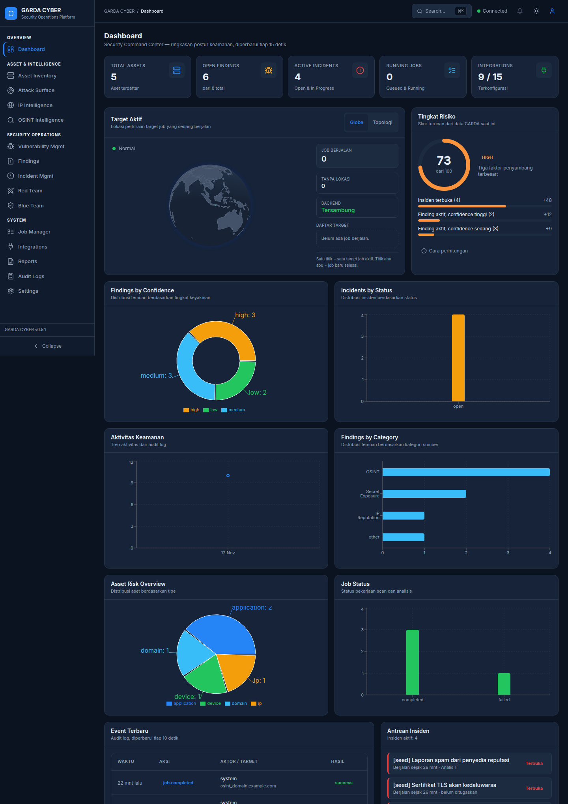
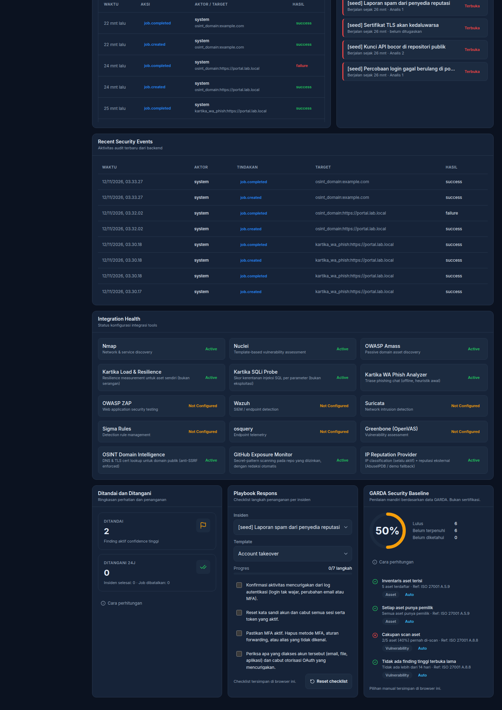
Tangkapan pada Gambar 1 dan Gambar 2 diambil dari satu bingkai penuh setinggi 3.950 piksel yang kemudian dipotong menjadi dua segmen dengan tumpang tindih kecil agar terbaca utuh di atas kertas A4.
Halaman Asset Inventory menyimpan catatan aset — objek yang menjadi tanggung jawab pengamanan, misalnya suatu host atau domain. Halaman ini terhubung penuh dengan API: Anda dapat menambah, mengubah, menghapus, dan mencari catatan, dan setiap perubahan tercatat di log audit (lihat 5.7).
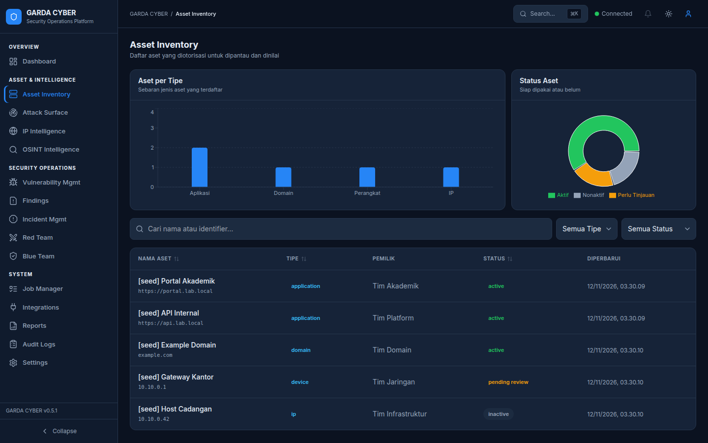
Halaman Attack Surface memuat OSINT Domain Intelligence: pencarian catatan DNS dan pemeriksaan sertifikat TLS untuk suatu nama domain. Dua hal yang membuat halaman ini layak diandalkan:
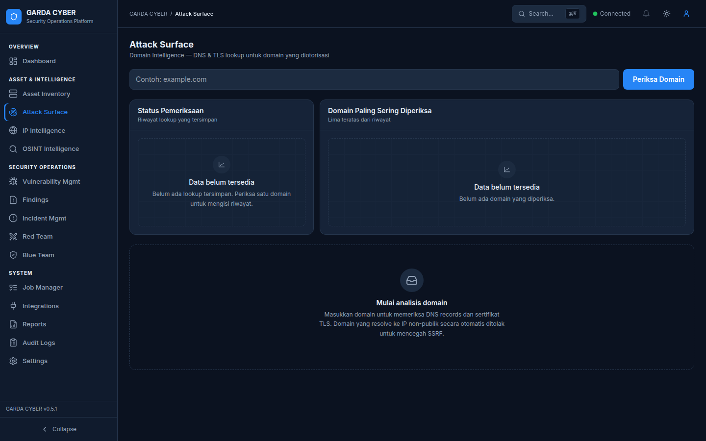
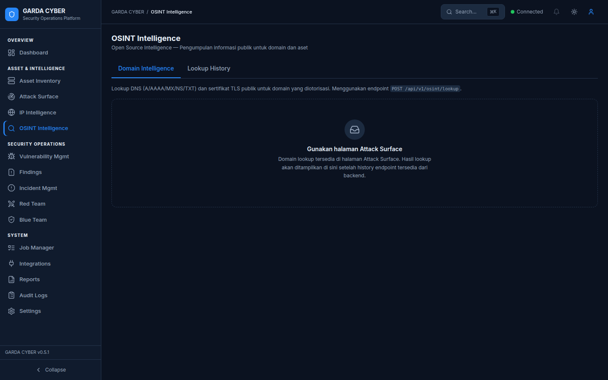
Halaman IP Intelligence memeriksa alamat IPv4 maupun IPv6. Hasilnya bukan sekadar jawaban dari penyedia: alamat diklasifikasi lebih dulu, ruang lingkup alamat yang boleh diperiksa ditegakkan di belakang, dan riwayat pemeriksaan tersimpan di basis data sehingga Anda dapat menelusuri kembali alamat yang pernah diperiksa.
Bila kunci API AbuseIPDB belum diisi, sistem memakai penyedia contoh (demo) — dan setiap jawabannya berlabel jelas seperti dijelaskan pada 5.3. Badge Mode Demo tampak pada halaman ini dan pada ringkasan tugas.
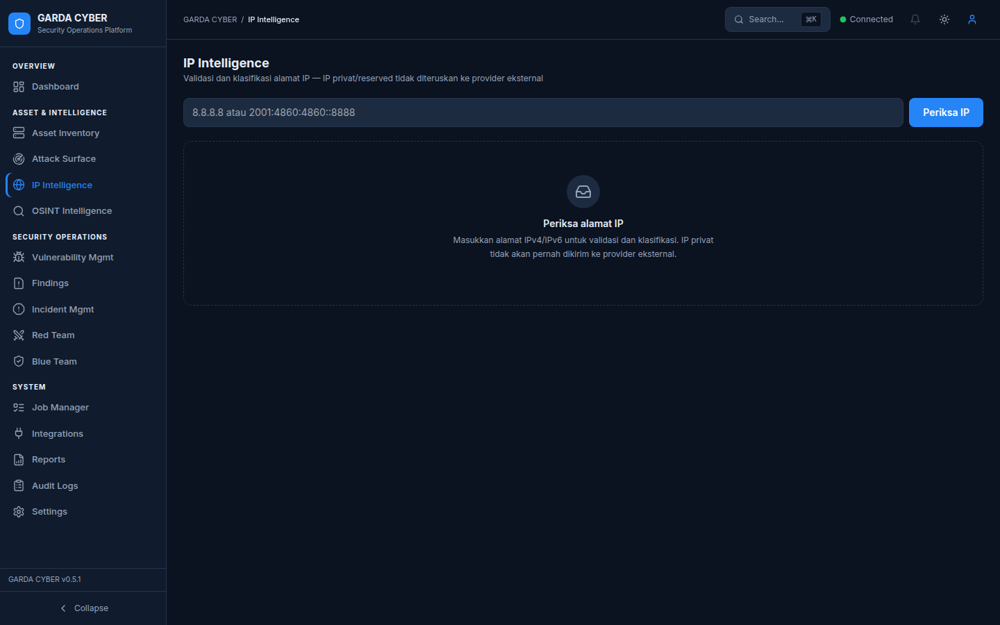
Halaman Vulnerability Management menghimpun temuan dari semua sumber ke dalam satu daftar. Panel GitHub Exposure Monitor di dalamnya menjalankan pemindaian repositori langsung dari halaman ini — Anda tidak perlu beralih ke terminal untuk melihat apakah berkas repositori membocorkan sesuatu.
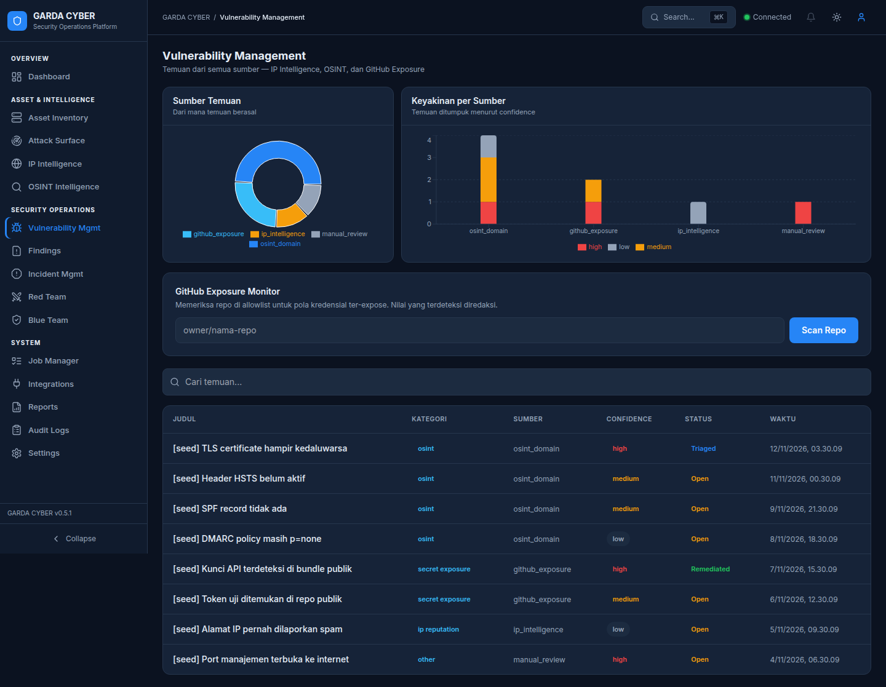
Halaman Incident Management memuat pengelolaan insiden: catatan kejadian keamanan yang perlu ditangani, dari pembuatan sampai penyelesaian. Data insiden juga menjadi sumber angka pada dasbor (Gambar 1) dan bahan ringkasan pada laporan (lihat 5.6).
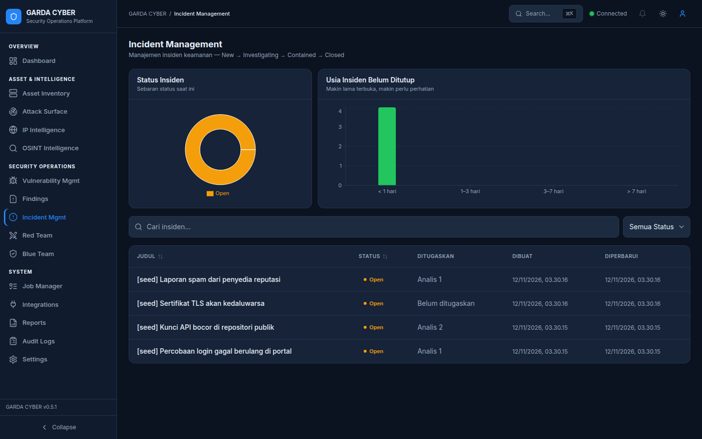
Halaman Blue Team adalah pos pertahanan. Halaman ini terhubung dengan titik akhir /incidents sehingga insiden dapat dikelola dari sini, dan menampilkan log akses — catatan metode, jalur, status, alamat IP, dan waktu dari setiap permintaan ke API (lihat Lampiran A, ACCESS_LOG_ENABLED). Karena itu halaman ini juga menjadi tempat Anda melihat jejak aktivitas yang terekam sistem.
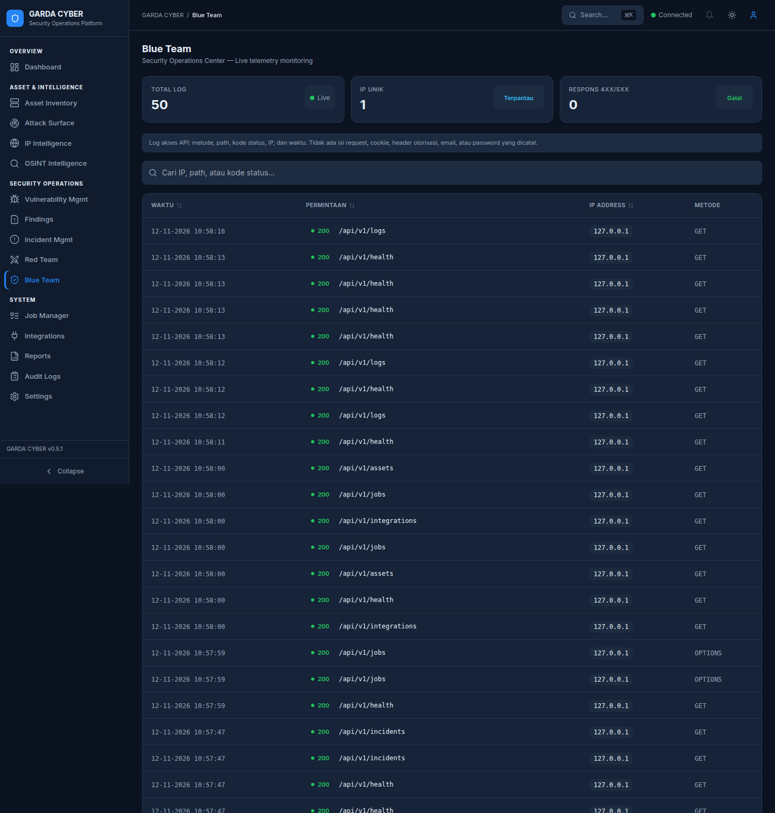
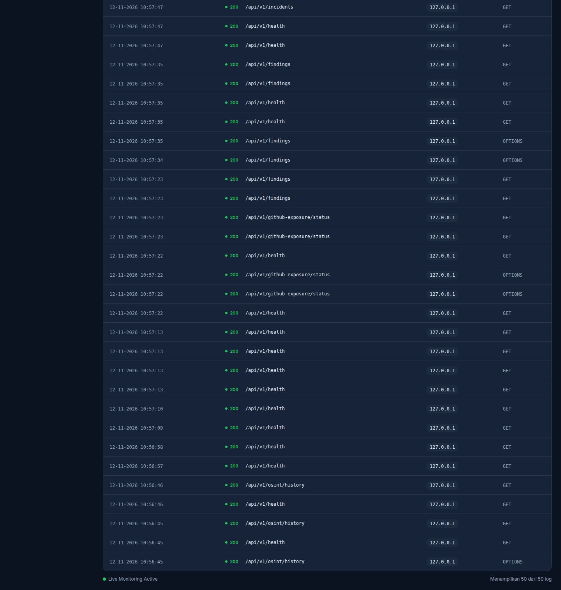
Halaman Red Team memuat katalog alat dari registri integrasi. Anda memilih satu alat dan satu aset target dari daftar tarik-turun, lalu menjalankannya melalui tombol pada halaman. Sistem mengirim permintaan pembuatan tugas ke titik akhir /jobs dengan bentuk seperti:
{ "tool_id": "nmap", "asset_id": "...", "parameters": { "flags": ["-sV"] } }
Sebelum tugas benar-benar dibuat, aplikasi menampilkan dialog konfirmasi terlebih dahulu, sehingga Anda tidak memicu pemindaian hanya karena salah klik. Riwayat tugas yang pernah dijalankan tampil pada tabel di halaman yang sama.
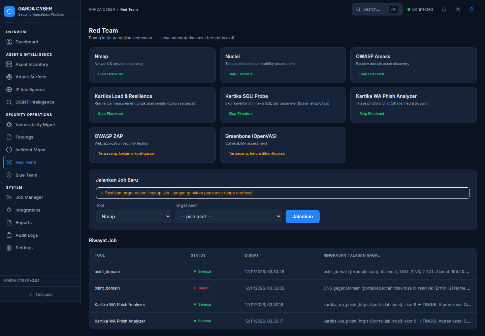
Job Manager adalah pusat pemantauan seluruh tugas, dari alat apa pun. Halaman ini menyediakan tabel tugas, penapis status, grafik sebaran, dan lencana status — termasuk status Dibatalkan bila suatu tugas dihentikan sebelum selesai.
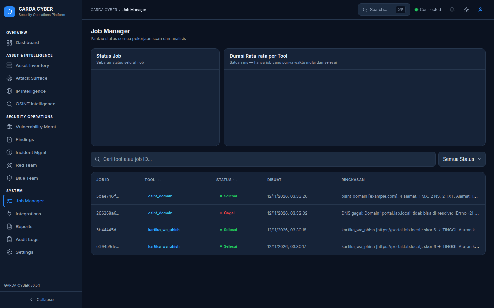
Halaman Integrations menampilkan kelima belas alat yang terdaftar dalam registri. Yang membuat halaman ini berbeda dari katalog biasa adalah dua status yang dilaporkan terpisah dan jujur:
Suatu alat boleh implemented tetapi belum configured; kombinasi itu tidak disembunyikan. Pada Gambar 13 terlihat kelima belas alat dengan lencana statusnya, termasuk lima alat terkunci dengan kalimat yang persis seperti pada kotak di bawah.
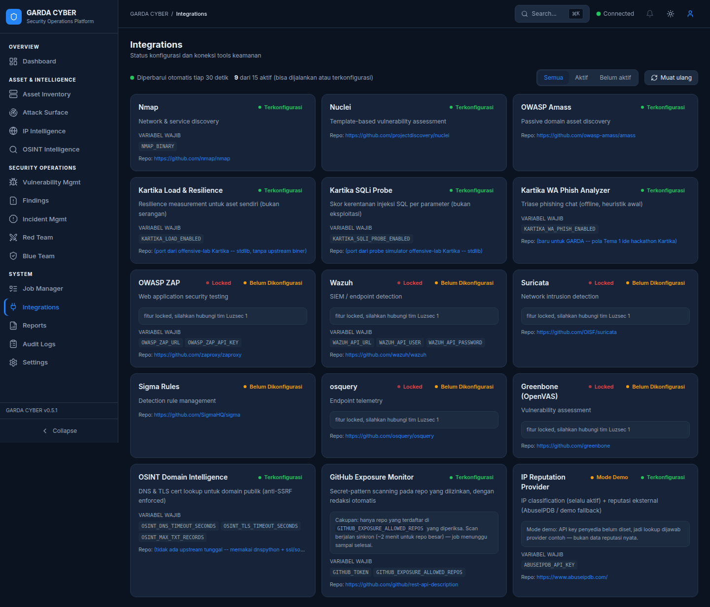
Sembilan alat berikut diverifikasi dengan tugas nyata, bukan sekadar status "terpasang" pada kertas. Hasil ujinya tercantum pada Tabel 4.
| Alat | Uji yang dijalankan | Hasil |
|---|---|---|
| nmap | -sV ke 127.0.0.1 | selesai, versi terdeteksi |
| nuclei | pemindaian ke http://127.0.0.1:8010 (API sendiri) | selesai, menjumpai openapi, swagger-api, tech-detect: uvicorn |
| amass | enumerasi pasif example.com | selesai, catatan NS + A + AAAA |
| kartika_load | beban 3 detik ke API sendiri | selesai, 8 permintaan, 9,5 rps, p50 190 ms, temuan RATE_LIMIT_MISSING |
| kartika_sqli_probe | parameter id di API sendiri | selesai, TANPA_SINYAL skor 0/100 |
| kartika_wa_phish | analisis teks (luring) | selesai, skor 6 = TINGGI |
| github_exposure | pemindaian repositori jejakmasgondrong/GARDA-CYBER | selesai, 200 berkas diperiksa, 0 temuan baru (dedup jalan) |
| ip_reputation | lookup 8.8.8.8 | jalan, dengan label Mode Demo (lihat 5.3) |
| osint_domain | example.com | selesai, 4 alamat A/AAAA, catatan MX/NS/TXT, TLS Cloudflare |
Alat ip_reputation berjalan tanpa kunci API AbuseIPDB karena ada penyedia contoh sebagai penampung. Ini bukan reputasi nyata, dan sistem dengan sengaja melabelinya di mana pun jawaban itu muncul. Ringkasan tugas selalu membawa kalimat berikut, apa adanya:
Titik akhir /integrations mengirimkan demo_mode: true untuk alat ini, dan halaman Integrations menampilkan badge Mode Demo beserta penjelasannya. Bila ABUSEIPDB_API_KEY diisi kelak, penyedia contoh otomatis tidak dipakai lagi dan badge itu hilang dengan sendirinya.
Lima alat berikut ini tidak dapat dijalankan pada versi ini. Sistem menolak pembuatan tugas untuk mereka dengan kalimat persis seperti pada kotak di bawah, sebelum pertanyaan "apakah alatnya terpasang" sempat dijawab.
| Alat | Yang dibutuhkan bila ingin diaktifkan kelak |
|---|---|
| owasp_zap | daemon ZAP + OWASP_ZAP_URL + OWASP_ZAP_API_KEY |
| wazuh | server Wazuh + WAZUH_API_URL + pengguna + sandi |
| suricata | mesin IDS/IPS terpasang + aturan (belum ada kontrak konfigurasi resmi pada Tahap 1) |
| osquery | daemon osquery + konfigurasi pertanyaan (belum ada kontrak konfigurasi resmi pada Tahap 1) |
| greenbone | pemindai Greenbone/OpenVAS + kredensial (belum ada kontrak konfigurasi resmi pada Tahap 1) |
Alat sigma terdaftar sebagai pajangan: keberadaannya ditampilkan agar Anda tahu bahwa tempat itu sudah disediakan, tetapi alat ini tidak menjalankan tugas. Hitungannya jujur: 9 jalan nyata + 1 pajangan + 5 terkunci = 15.
Halaman Reports merangkum temuan dan insiden menjadi gambaran keadaan. Pada instalasi dengan data yang masih sedikit, halaman ini menampilkan keadaan kosong secara jujur — laporan hanya bermakna bila data pendukungnya sudah terkumpul.
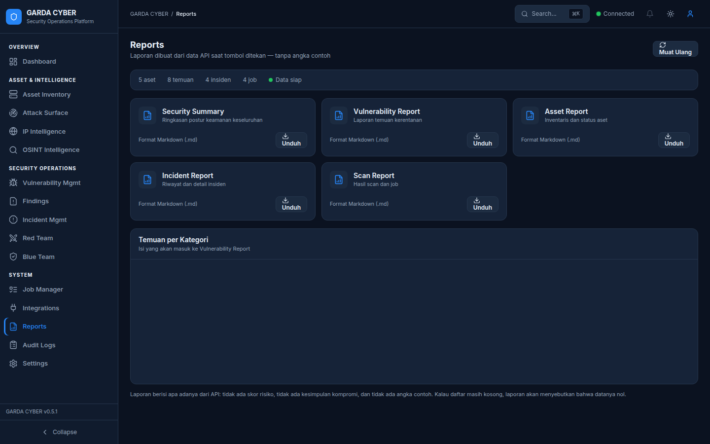
Halaman Audit Logs menampilkan catatan jejak: aksi pembuatan dan pengubahan temuan serta insiden terekam di sini. Keberadaan log ini yang membuat klaim "setiap perubahan tercatat" pada Bab III dapat diperiksa, bukan sekadar dikatakan.
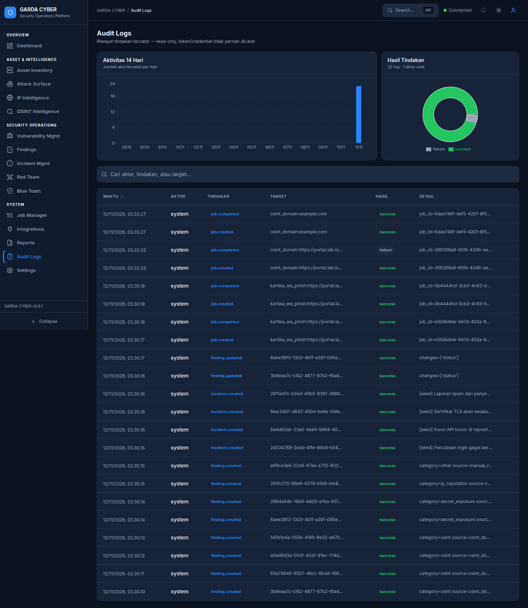
Halaman Settings memuat tempat Anda mengisikan kunci API. Perlu Anda ketahui dengan jelas: nilai yang Anda tulis di sini disimpan di penyimpanan lokal peramban (localStorage), bukan di server. Sistem menjelaskan bahwa kunci itu dikirim lewat kepala permintaan X-API-Key pada setiap panggilan API.
Sebaliknya, berkas backend/.env.example memuat variabel API_KEY untuk sisi belakang: bila diisi, semua /api/v1/* (kecuali kesehatan) mewajibkan kepala X-API-Key. Bila kosong, tidak ada autentikasi. Lihat Bab VI untuk konsekuensinya.
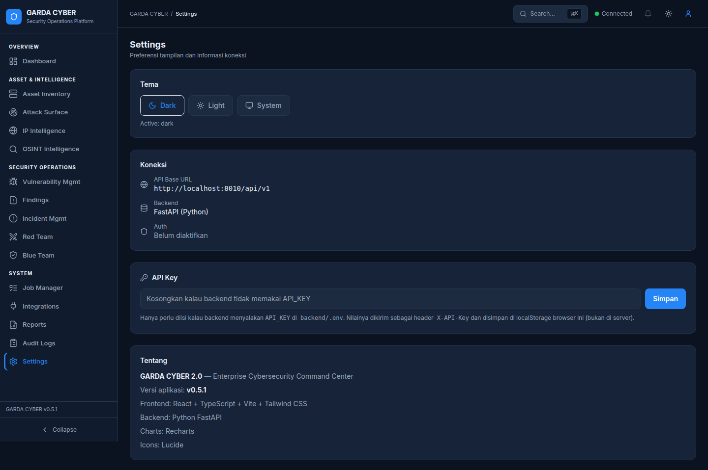
Agar Anda tidak perlu menebak, berikut status jujur setiap halaman kerja seperti tercantum dalam dokumentasi proyek.
| Halaman | Status |
|---|---|
| Overview (Dasbor) | Terhubung ke /health dan /assets nyata |
| Asset Inventory | Kelola penuh, terhubung API nyata |
| IP Intelligence | Selesai dan diuji: klasifikasi IPv4/IPv6, penegakan ruang lingkup di belakang, penyedia demo berlabel, riwayat tersimpan |
| Blue Team | Terhubung ke /incidents, tabel dan keadaan kosong nyata |
| Audit Logs | Terhubung ke /audit-logs, mencatat aksi buat/ubah temuan dan insiden |
| Integrations | Status jujur per alat: implemented vs configured |
| Attack Surface | Selesai dan diuji: DNS + TLS dengan penegakan anti-SSRF di belakang |
| Vulnerability Management | Selesai dan diuji: temuan dari semua sumber + panel GitHub Exposure Monitor |
| Red Team | Katalog alat dari registri; pelaksanaan tugas nyata dari halaman ini jalan (konfirmasi + riwayat) |
| Reports | Keadaan kosong — menunggu data temuan/insiden lebih banyak |
| Settings | Halaman dasar, belum ada manajemen pengguna/persekutuan (menunggu autentikasi) |
Pengujian dijalankan dengan perintah berikut dari folder backend/:
.venv/bin/python -m pytest -q
Hasil aktual pada penyusunan buku ini: 114 test lulus, tanpa kegagalan. Angka ini bukan target — melainkan keluaran perintah di atas. Rincian per berkas pengujian ada pada Tabel 6.
| Berkas uji | Jumlah uji | Yang diperiksa |
|---|---|---|
| kartika_probe_wa | 16 | probing WhatsApp phishing |
| abuseipdb_provider | 13 | penyedia reputasi IP |
| osint_dns_safety | 12 | keamanan pencarian DNS |
| ip_classification | 12 | klasifikasi alamat IP |
| github_exposure_service | 11 | pemantauan paparan repositori |
| kartika_load_adapter | 9 | alat beban dan ketahanan |
| osint_api | 7 | titik akhir OSINT |
| findings | 6 | temuan kerentanan |
| secret_patterns | 5 | pola rahasia pada berkas |
| ip_intelligence_api | 4 | titik akhir intelijen IP |
| incidents | 4 | pengelolaan insiden |
| access_log_and_api_key | 3 | log akses dan kunci API |
| redaction | 2 | penyamaran data sensitif |
| osint_tls_service | 2 | pemeriksaan sertifikat TLS |
| integrations_registry | 2 | registri integrasi |
| health | 2 | titik akhir kesehatan |
| audit_logs | 2 | catatan jejak |
| kartika_crash_stub | 1 | stub tidak fungsional (sengaja) |
| assets | 1 | manajemen aset |
Jumlah seluruhnya 114. Berkas docs/MERGE_REPORT.md memuat angka "72 lulus" — angka itu adalah laporan historis ketika gabungan kode, bukan kondisi sekarang. Buku ini memakai angka aktual.
Sistem menjaga dirinya sendiri lewat beberapa gate. Masing-masing sudah diuji, dan hasilnya menyertai rincian pada Tabel 7.
| Gate | Yang dijaga | Bukti |
|---|---|---|
| Anti-SSRF | Larangan alamat privat, loopback, dan titik akhir meta-data awan pada pencarian OSINT | berkas uji osint_dns_safety (12 uji) |
| Ruang lingkup IP | Alamat yang boleh diperiksa ditegakkan di belakang, bukan di peramban | berkas uji ip_intelligence_api (4 uji) |
| Kunci API | X-API-Key wajib bila API_KEY diisi; titik akhir kesehatan tetap bebas | berkas uji access_log_and_api_key (3 uji) |
| Penyedia demo berlabel | Jawaban demo tidak pernah menyamar sebagai data nyata | berkas uji abuseipdb_provider (13 uji) |
| Penyamaran data | Data sensitif disamarkan sebelum ditampilkan | berkas uji redaction (2 uji) |
| Alat terkunci | Pembuatan tugas untuk lima alat terkunci ditolak sebelum eksekusi | kalimat persis pada 5.4, terverifikasi di antarmuka |
| Batas beban | Durasi, untaian, jumlah permintaan, dan rps dibatasi server | berkas uji kartika_load_adapter (9 uji) |
Dua temuan pengamanan pada sisi depan juga sudah diperbaiki dan terekam dalam docs/SECURITY_AUDIT.md, bersama sepuluh saran untuk sisi belakang yang sampai dengan buku ini masih berupa tulisan, belum kode.
Bagian ini sengaja ditulis apa adanya. Bila Anda menjadikan sistem ini untuk hal di luar batas berikut, Anda berisiko menggantungkan harapan pada sesuatu yang belum ada.
| Batas | Akibatnya bagi Anda |
|---|---|
| Autentikasi dan manajemen peran belum dibangun | Belum ada pemisahan hak akses pengguna; halaman Settings masih dasar |
| ZAP, Wazuh, Suricata, Sigma, osquery, Greenbone hanya berupa entri registri atau terkunci (configured: false) | Kelima-limanya tidak menjalankan tugas pada versi ini |
| github_exposure bersifat sinkron | Pemindaian satu repositori bisa memakan waktu hingga menit; tidak ada antrean, sesuai desain |
| /api/v1/* dapat diakses siapa pun yang menjangkau port belakang bila API_KEY kosong | Jangan membiarkan port terbuka ke jaringan lain tanpa mengisi kunci |
| SQLite dalam Docker memakai volume bernama, tetapi pencadangan tetap tanggung jawab Anda | Cadangkan berkas basis data secara manual dan berkala |
| Penyebaran produksi belum dijalankan | Berkas deployment/README.md berisi persiapan saja |
Masalah berikut ditemui sendiri ketika sistem ini dikerjakan, dan penanganannya sudah terekam dalam dokumentasi proyek.
| Gejala | Penanganan |
|---|---|
| Data "hilang" setelah server dijalankan dari folder lain | DATABASE_URL relatif terhadap folder tempat perintah dijalankan; jalankan backend dari backend/ atau pakai path absolut |
| Berkas backend/.env tidak terbaca | Berkas .env juga dibaca relatif terhadap folder kerja; jalankan dengan cd backend lebih dulu |
| nmap tidak dikenali padahal berkasnya ada | Hasil ekstrak berkas .deb butuh berkas pembungkus (wrapper), bukan sekadar path ke programnya |
| nuclei gagal dengan waktu habis pada tugas pertama | Unduh templat nuclei sebelum menjalankan tugas pertama |
| amass membalas kesalahan "engine did not respond" | amass v5 pecah menjadi klien dan mesin; pakai amass v4 |
| Port 8000 sudah dipakai layanan lain | Jalankan dengan port lain, misalnya bash setup.sh 8001 5174 |
| Proses tidak berhenti walau berkas penanda sudah dihapus | Hentikan lewat nomor proses langsung (kill), jangan membunuh pola nama yang cocok dengan terminal Anda sendiri |
Buku ini tidak mengutip makalah. Rujukan penyusunnya adalah dokumentasi resmi dari perangkat lunak yang dipakai, yang dapat Anda periksa langsung:
| Variabel | Fungsi |
|---|---|
| APP_ENV | Lingkungan jalan (development dan sebagainya) |
| APP_HOST / APP_PORT | Alamat dan port server belakang (bawaan 127.0.0.1:8000) |
| DATABASE_URL | Lokasi basis data SQLite; pakai path absolut agar tidak berpindah |
| FRONTEND_ORIGIN | Asal peramban yang diizinkan CORS (pisah koma) |
| SECRET_KEY | Wajib diisi sebelum produksi |
| DOMAIN_NAME | Nama domain, diisi saat tahap deployment VPS |
| NMAP_BINARY | Path program nmap (bila tidak di PATH) |
| OWASP_ZAP_URL / OWASP_ZAP_API_KEY | Alamat daemon ZAP dan kuncinya |
| WAZUH_API_URL / WAZUH_API_USER / WAZUH_API_PASSWORD | Alamat server Wazuh dan kredensialnya |
| ABUSEIPDB_API_KEY | Kunci AbuseIPDB; bila diisi, penyedia nyata aktif otomatis |
| DEMO_PROVIDER_ENABLED | true mengaktifkan penyedia contoh; kosongkan bila tidak perlu |
| OSINT_DNS_TIMEOUT_SECONDS / OSINT_TLS_TIMEOUT_SECONDS / OSINT_MAX_TXT_RECORDS | Batas waktu dan batas jumlah catatan OSINT |
| GITHUB_TOKEN | Token akses pribadi cakupan baca isi; jangan pernah dikirim ke Git |
| GITHUB_EXPOSURE_ALLOWED_REPOS | Daftar owner/repo yang boleh dipindai (pisah koma); hanya inilah yang diperiksa |
| GITHUB_MAX_FILES_PER_SCAN / GITHUB_MAX_FILE_BYTES / GITHUB_API_TIMEOUT_SECONDS | Batas jumlah berkas, ukuran berkas, dan waktu tunggu pemindaian |
| KARTIKA_LOAD_ENABLED dan batas KARTIKA_LOAD_* | Alat beban beserta batas atas durasi, untaian, permintaan, rps (dikekang server) |
| KARTIKA_SQLI_PROBE_ENABLED / KARTIKA_WA_PHISH_ENABLED | Alat probing SQLI dan analisis WhatsApp phishing |
| API_KEY | Kunci API belakang; bila diisi, /api/v1/* mewajibkan kepala X-API-Key |
| ACCESS_LOG_ENABLED / ACCESS_LOG_MAX_ROWS | Catatan akses untuk halaman Blue Team dan batas barisnya |
| Variabel | Fungsi |
|---|---|
| VITE_API_BASE_URL | Alamat titik akhir API belakang yang dipakai peramban (variabel depan wajib berawalan VITE_) |
Salinan berkas-berkas ini menjadi backend/.env dan frontend/.env.local masing-masing, dibuat otomatis oleh skrip pemasangan bila belum ada.
| Maksud | Perintah |
|---|---|
| Pasang dan jalankan (Linux/macOS) | bash setup.sh |
| Pasang dan jalankan dengan port lain | bash setup.sh 8001 5174 |
| Pasang di Windows | klik dua kali setup.bat, atau jalankan di PowerShell |
| Berhenti | kill $(cat /tmp/garda-cyber-backend.pid) $(cat /tmp/garda-cyber-frontend.pid) |
| Isi data demo manual | cd backend && .venv/bin/python scripts/seed_demo.py --base "http://127.0.0.1:8000" --skip-existing |
| Isi data demo dengan OSINT (butuh internet) | tambahkan --with-osint pada perintah di atas |
| Jalankan seluruh uji | cd backend && .venv/bin/python -m pytest -q |
| Alat integrasi tambahan tanpa hak sudo | bash scripts/install_optional_tools.sh |
Dua teks berikut merupakan bagian dari perilaku sistem yang disengaja. Keduanya ditulis persis seperti tampil pada aplikan, agar bila Anda menemukannya di layar, Anda tahu artinya dan dari mana asalnya.
Muncul pada kelima alat terkunci (Bab 5.4) dan menjadi catatan penolakan bila ada percobaan pembuatan tugas untuk alat-alat itu.
Menempel pada setiap jawaban alat ip_reputation ketika kunci API AbuseIPDB belum diisi, bersama kalimat penjelasan pada 5.3. Label ini hilang dengan sendirinya bila kunci asli sudah diisi.
Gambar berikut adalah tangkapan layar dasbor apa adanya, sebelum dipotong menjadi dua segmen untuk keperluan cetak (Gambar 1 dan Gambar 2 pada Bab III). Ditampilkan lengkap di sini supaya Anda dapat memeriksa sendiri isi penuhnya.
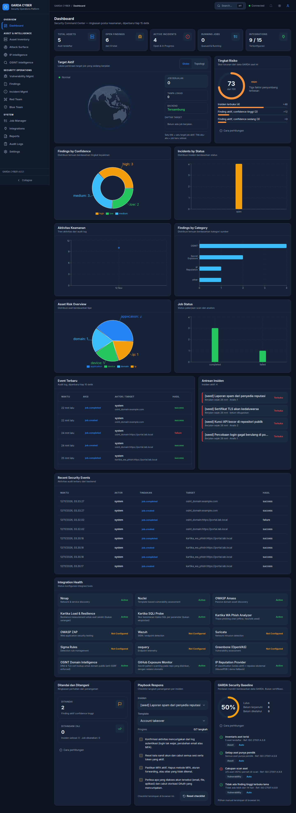
— Selesai. Buku ini seharusnya tidak memuat janji yang tidak dapat Anda periksa sendiri di layar. Bila Anda menemukan perbedaan antara buku ini dengan apa yang tampil pada versi perangkat lunak Anda, versi perangkat lunak Anda yang benar, dan buku ini perlu disusun ulang untuk versi tersebut.